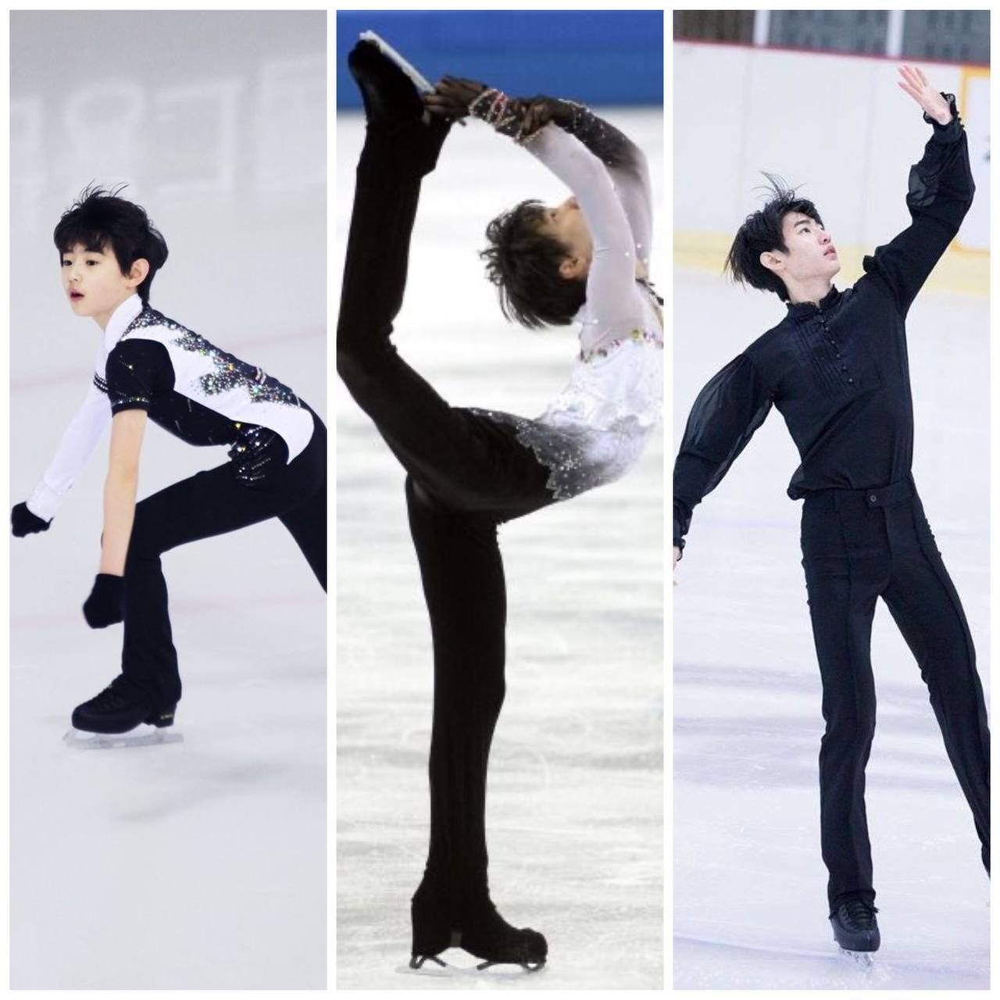
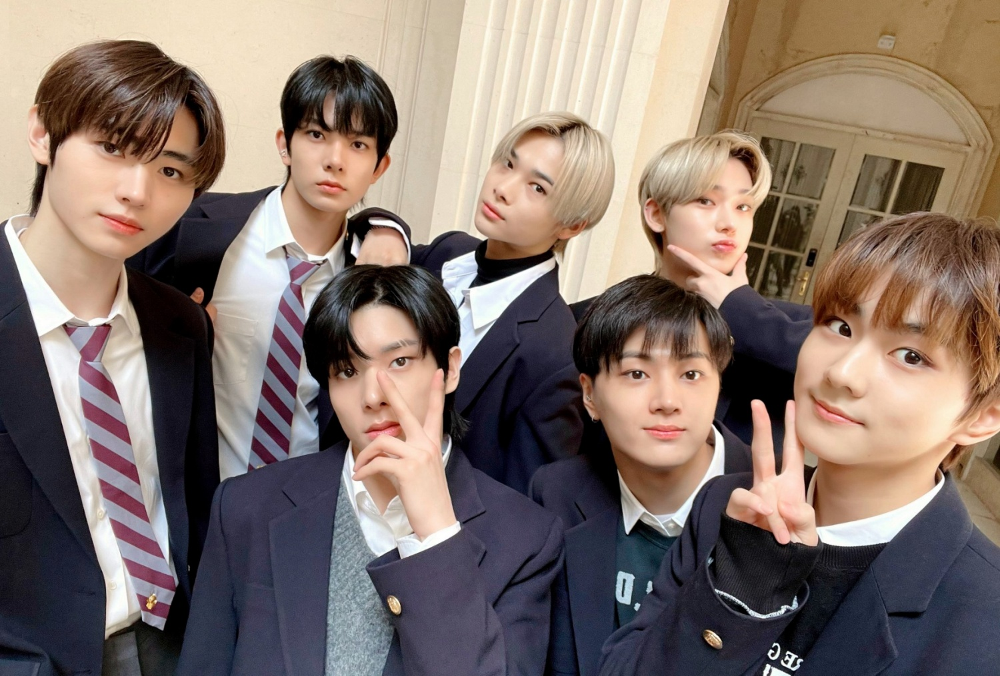
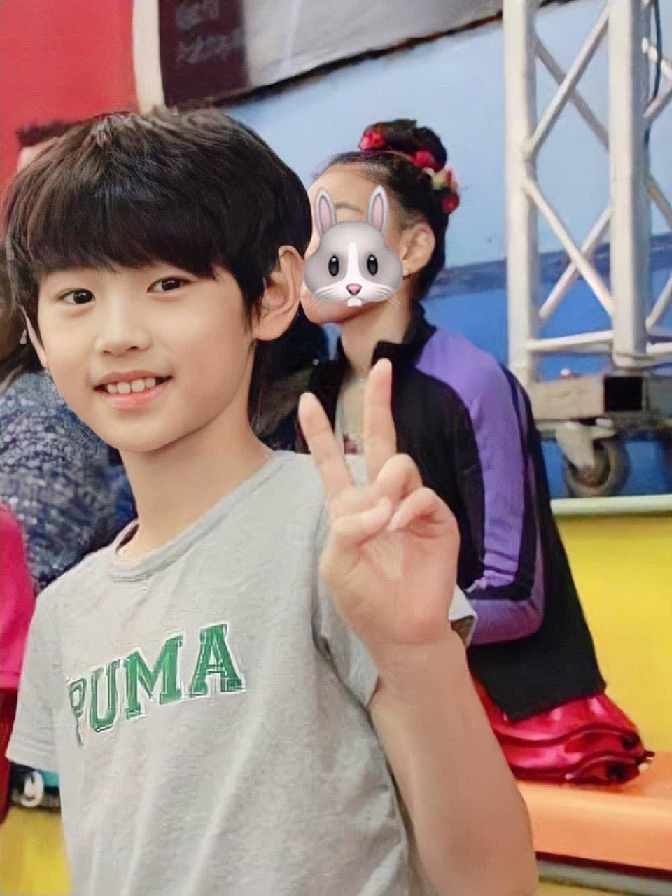

He started figure skating when he was 9 years old. He won two international advanced novice competations.
In 2018, he became a trainee at Bighit after getting scouted while figure skating. In June 2020, he was
a participant in the survival show I-Land. As one of seven successful participants, he went to join newly
formed idol group Enhypen, placing sixth.
He started skating because he had Amploypia when he was young. His right eye couldn't see and did surgery which
took 12 hrs long. He didn't have friends because of his eye. His parents suggested him to try skating. He got friends
from skating.

Enhypen has 7 memebers. They are Heesung, Jay, Jake, Sunghoon, Sunoo, Jungwoo and Niki. They debuted in 30 November 2020
with the album: Border Day One. They have over one million sales with two albums. Thye received a lot of rookie of the
year awards.
His closed member is Jake. They became friends easily because they have same personality. His favourite color is white.
His nickname is ice-prince. His ideal type is Irene from Red Velvet.

He is so famous since his childhood because of his good-looking face. During I-land, he ranked
visual one among all participants.
There are a lot of his figure skating videoes on youtube. He is now visual of Enhypen. He is so handsome in every photos
especially in mirror selfies.
He is now MC of Music Bank with Wonyoung.
.png)